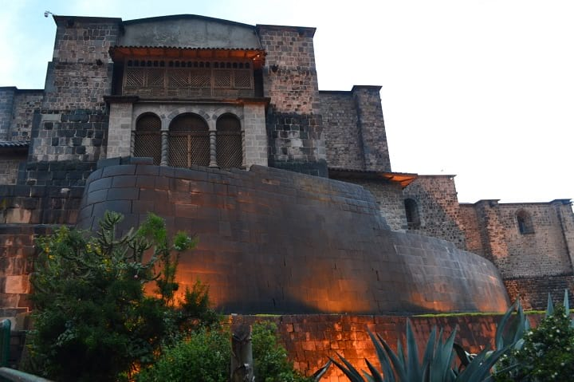
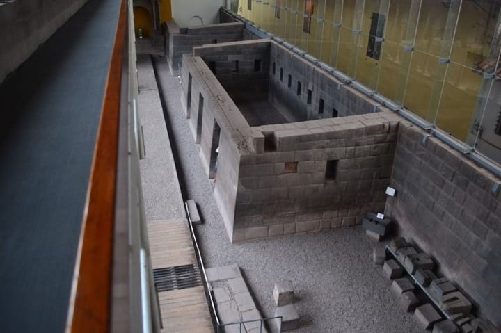

Cusco City Tour
Cusco City Tour
Introduction
An excellent start to your stay in Cusco, the Cusco City Tour is offered every afternoon from 2:00 PM to 7:00 PM. Below are some of the guided sites that you will see on this tour.
Coricancha
The famous Temple of the Sun in Cusco, this is the pinnacle of Incan architecture, organization, and religion. Coricancha literally means "Golden Palace," and is known as the Convent of Santo Domingo today.
Saqsaywaman
This impressive forteress is built on a hill overlooking Cusco. It serves to protect the valley but is also the location of the Inti Raymi event.
Q'enqo
A religious place. This archaelogicial site features an amphitheater with trapezoidal niches as well as a monolith in the shape of a puma.
Puka Pukara
A military construction composed of large walls, terraces, and stairways, this was part of the Incan defense complex in Cusco. Literally meaning, "Red Fortress" due to the reddish stones that it is built with, this site is an archaelogicial wonder.
Includes
All Transportation
Professional bilingual guide
NOT INCLUDED
Tourist ticket to enter archaelogicial sites (70 to 130 soles)
Entrance to Coricancha (15 soles
Departures
Daily at 2:00 PM